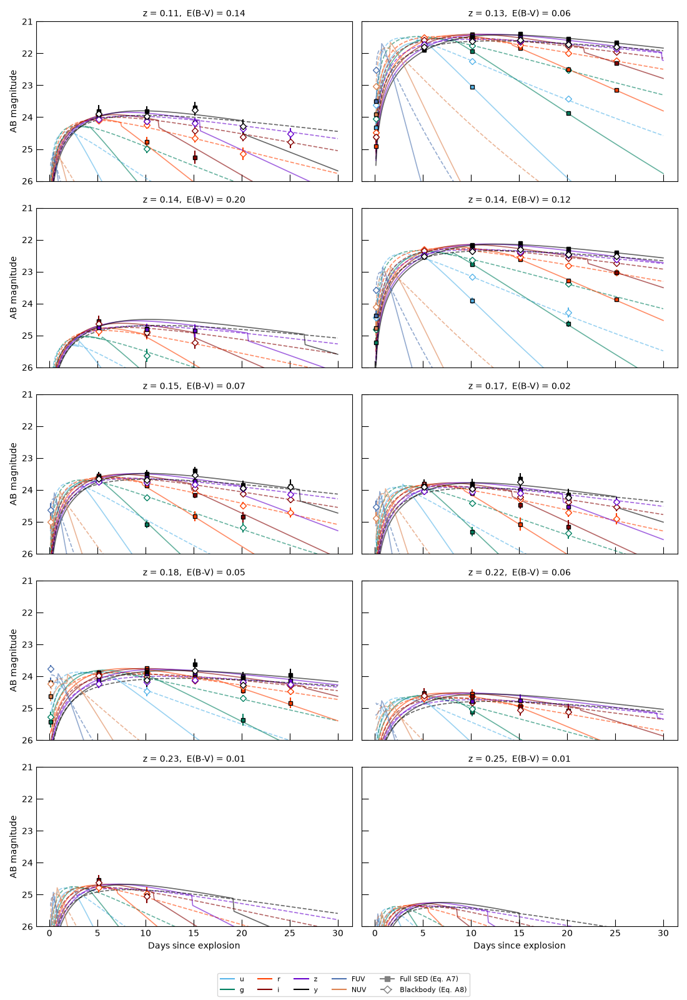

Note
Go to the end to download the full example code.
Shock-Cooling Models: Blackbody vs. Full SED#
The Morag+24 shock-cooling emission of Type IIb supernovae comes in two flavors that share the same
physical parameters and the same bolometric-luminosity/color-temperature evolution, but differ in
the shape of the spectrum: MoragShockCoolingBlackbodySED
is a pure blackbody (Eq. A8), while MoragShockCoolingSED
adds the UV line suppression and free-free correction of Eq. A7. Since UVEX observes precisely in
the UV where those two disagree the most, it’s a useful test case for a follow-up campaign.
In this example, we’ll:
Sample 10 events (redshift, sky position, and SED parameters) from the parent
ShockCoolingIIbpopulation,Simulate Rubin + UVEX photometry for each of them under both SEDs, using identical parameters, and
Plot the light curves in a 5 x 2 grid, one event per panel.
import numpy as np
from astropy import units as u
from astropy.coordinates import SkyCoord
from astropy.table import vstack
from m4opt.missions import rubin, uvex
from m4opt.synphot.background import GalacticBackground, SkyBackground
from matplotlib import pyplot as plt
from uvex_transients.dust import dust_map, log_attenuation, resolve_ebv
from uvex_transients.models.supernovae import MoragShockCoolingBlackbodySED
from uvex_transients.transients.supernovae import ShockCoolingIIb
Sample the events#
Both SEDs share one parameter list, so we draw the population once from the parent transient
class and reuse it for each model. Redshifts come from the class’s rate-weighted redshift
distribution (sample_event_redshift()),
and the SED parameters from the SED’s priors. Sky positions are drawn isotropically, and each event’s
Milky Way reddening is looked up from the dust map at its position.
The class’s default duration only covers the first ~20 days, so we widen it to 30 days to match the window we want to observe. We also cut the redshift limit down from its survey-scale default of 1: shock-cooling peaks are only ~-17 to -18 mag, so at the rate-weighted typical z ~ 0.5-1 nearly every event would sit below the detection limit of either instrument and make for an empty plot.
N_EVENTS = 10
DURATION = 30 * u.day
transient = ShockCoolingIIb()
transient.duration_limit = DURATION
transient.redshift_limit = 0.25
sed_full = transient.sed
sed_bb = MoragShockCoolingBlackbodySED()
rng = np.random.default_rng(2024)
redshifts = transient.sample_event_redshift(N_EVENTS, rng=rng)
coords = SkyCoord(
ra=rng.uniform(0, 360, N_EVENTS) * u.deg,
dec=np.degrees(np.arcsin(rng.uniform(-1, 1, N_EVENTS))) * u.deg,
)
ebvs = np.atleast_1d(resolve_ebv(dust_map(), coords)).astype(float)
luminosity_distances = transient.cosmology.luminosity_distance(redshifts)
samples = sed_full.sample_parameters(N_EVENTS, rng=rng)
# Sort by redshift so the grid reads from nearest to farthest.
order = np.argsort(redshifts)
events = [
{
"coord": coords[i],
"z": float(redshifts[i]),
"d_L": luminosity_distances[i],
"ebv": float(ebvs[i]),
"params": {name: value[i] for name, value in samples.items()},
}
for i in order
]
Choosing the cadences#
We use the same cadences as Multi-Band ToO Follow-up:
Rubin’s redder bands (r/i/z/y) every 5 days and its bluer bands (u/g) every
10 days, at 30 s exposures, with Rubin’s systematic calibration floor added in quadrature; and
UVEX’s FUV/NUV every 20 days at 900 s. Each visit sequence starts at 0.1 days rather than
exactly 0, since the shock-cooling model is undefined at the moment of explosion itself.
RUBIN_CADENCES = {
"u": 10 * u.day,
"g": 10 * u.day,
"r": 5 * u.day,
"i": 5 * u.day,
"z": 5 * u.day,
"y": 5 * u.day,
}
RUBIN_EXPTIME = 30 * u.s
RUBIN_SIGMA_SYS = {"u": 0.0075, "g": 0.005, "r": 0.005, "i": 0.005, "z": 0.0075, "y": 0.0075}
UVEX_CADENCE = 20 * u.day
UVEX_EXPTIME = 900 * u.s
T_START = 0.1 * u.day
rubin_band_groups: dict[u.Quantity, list[str]] = {}
for band, cadence in RUBIN_CADENCES.items():
rubin_band_groups.setdefault(cadence, []).append(band)
def visit_times(cadence: u.Quantity) -> u.Quantity:
"""Visit times from `T_START` out to `DURATION`, one every `cadence`."""
return T_START + np.arange(0, (DURATION - T_START).to_value(u.day), cadence.to_value(u.day)) * u.day
Simulating photometry#
For each event and each SED, one simulate_photometry()
call is made per (instrument, cadence) group and the results are stacked. The same random seed is used for
both SEDs so that any difference between them is down to the model, not the noise realization.
def simulate(sed, event):
"""Simulate Rubin + UVEX photometry of `event` under `sed`."""
common = {
"redshift": event["z"],
"luminosity_distance": event["d_L"],
"ebv": event["ebv"],
"rng": 0,
**event["params"],
}
tables = []
for cadence, bands in rubin_band_groups.items():
table = sed.simulate_photometry(
visit_times(cadence),
RUBIN_EXPTIME,
rubin.detector,
event["coord"],
bands=bands,
background=SkyBackground.medium(),
sys_err=RUBIN_SIGMA_SYS,
**common,
)
table["instrument"] = "Rubin"
tables.append(table)
table = sed.simulate_photometry(
visit_times(UVEX_CADENCE),
UVEX_EXPTIME,
uvex.detector,
event["coord"],
background=GalacticBackground(),
**common,
)
table["instrument"] = "UVEX"
tables.append(table)
phot = vstack(tables)
phot.sort(["t", "band"])
return phot
phot_full = [simulate(sed_full, event) for event in events]
phot_bb = [simulate(sed_bb, event) for event in events]
print(phot_full[0]["t", "instrument", "band", "snr", "ab_mag"][:6])
t instrument band snr ab_mag
d
--- ---------- ---- ------------------ ------------------
0.1 UVEX FUV 1.6347194972862666 25.882408291838704
0.1 UVEX NUV 1.5572950743926957 26.055148664112487
0.1 Rubin g 2.0979891357496445 26.534717098946565
0.1 Rubin i 0.8307597502533354 25.971912976646557
0.1 Rubin r 1.1484908902262905 26.69542653150652
0.1 Rubin u 1.1814397426643424 26.27678301303333
The light curves#
Each panel is one event, with events ordered by redshift. Solid lines and filled squares are the noiseless curve and simulated visits for the full SED; dashed lines and open diamonds are the same for the blackbody. Only visits with SNR > 5 are drawn as points.
SNR_THRESHOLD = 5.0
t_theory = np.linspace(T_START.value, DURATION.value, 300) * u.day
band_detectors = dict.fromkeys(RUBIN_CADENCES, rubin.detector) | {"FUV": uvex.detector, "NUV": uvex.detector}
band_colors = {
"u": "#56B4E9",
"g": "#008060",
"r": "#FF4000",
"i": "#850000",
"z": "#6600CC",
"y": "#000000",
"FUV": "#4C72B0",
"NUV": "#DD8452",
}
band_nu = {
band: detector.bandpasses[band].pivot().to(u.Hz, equivalencies=u.spectral())
for band, detector in band_detectors.items()
}
fig, axes = plt.subplots(5, 2, figsize=(11, 16), sharex=True, sharey=True)
for ax, event, table_full, table_bb in zip(axes.flat, events, phot_full, phot_bb):
for band, color in band_colors.items():
nu = band_nu[band]
for sed, linestyle in ((sed_full, "-"), (sed_bb, "--")):
theory = sed.mag(
nu,
t_theory,
redshift=event["z"],
luminosity_distance=event["d_L"],
log_attenuation=log_attenuation(nu, event["ebv"]),
**event["params"],
)
ax.plot(t_theory.value, theory.value, color=color, ls=linestyle, lw=1.2, alpha=0.6)
for table, marker, filled in ((table_full, "s", True), (table_bb, "D", False)):
detected = (table["band"] == band) & np.isfinite(table["ab_mag"]) & (table["snr"] > SNR_THRESHOLD)
if np.any(detected):
ax.errorbar(
table["t"][detected].to_value(u.day),
table["ab_mag"][detected],
yerr=table["mag_err"][detected],
marker=marker,
ms=5,
mfc=color if filled else "w",
mec=color if not filled else "k",
ecolor=color,
linestyle="none",
)
ax.set_title(f"z = {event['z']:.2f}, E(B-V) = {event['ebv']:.2f}", fontsize=10)
for ax in axes[-1]:
ax.set_xlabel("Days since explosion")
for ax in axes[:, 0]:
ax.set_ylabel("AB magnitude")
axes[0, 0].invert_yaxis()
axes[0, 0].set_ylim([26, 21])
handles = [plt.Line2D([], [], color=color, label=band) for band, color in band_colors.items()]
handles += [
plt.Line2D([], [], color="gray", ls="-", marker="s", label="Full SED (Eq. A7)"),
plt.Line2D([], [], color="gray", ls="--", marker="D", mfc="w", label="Blackbody (Eq. A8)"),
]
fig.legend(handles=handles, loc="lower center", ncol=5, fontsize=8)
fig.tight_layout(rect=(0, 0.04, 1, 1))
plt.show()

Total running time of the script: (0 minutes 6.663 seconds)